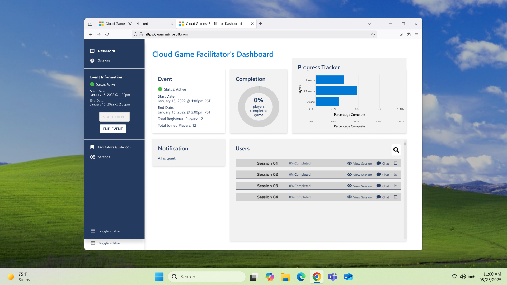

← Selected workThe whole game.
The whole game.
A clearer view.
A facilitator overview for the multiplayer expansion of Who Hacked?
ProjectMicrosoft · Facilitator Dashboard
My roleProduct · UI · Prototyping

The challenge
Expanding Who Hacked? into a multiplayer experience introduced another perspective: the facilitator. The dashboard needed to support oversight of the shared game experience.
My contribution
I contributed product and UI design and created Figma prototypes, working with project managers, an art director, and a developer.
A connected experience
This work extends the original cybersecurity game into a multiplayer setting. It explores the facilitator’s view alongside the player experience.
Explore the complete process and original artifacts in the original case study ↗.
Back to selected work ↗